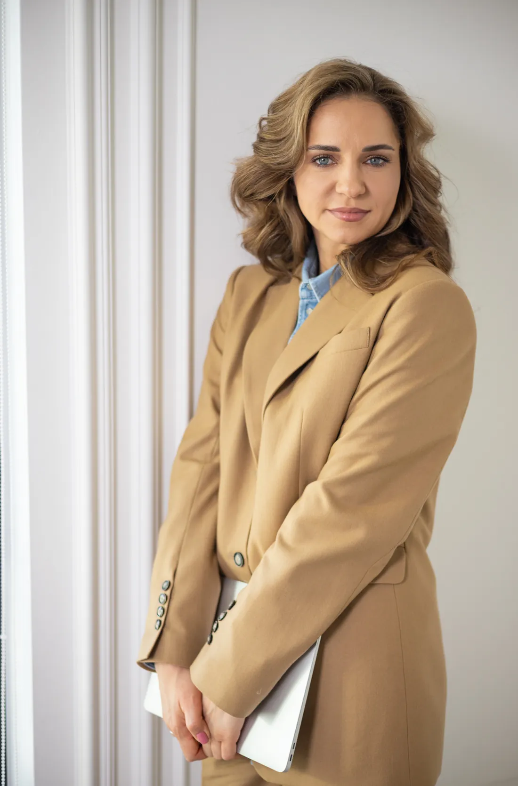
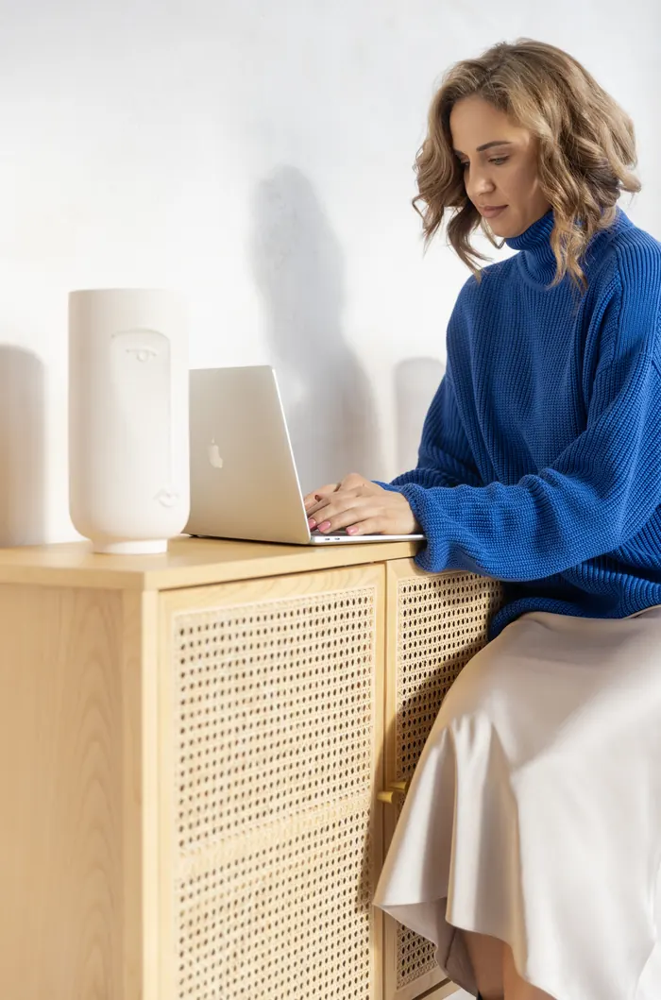
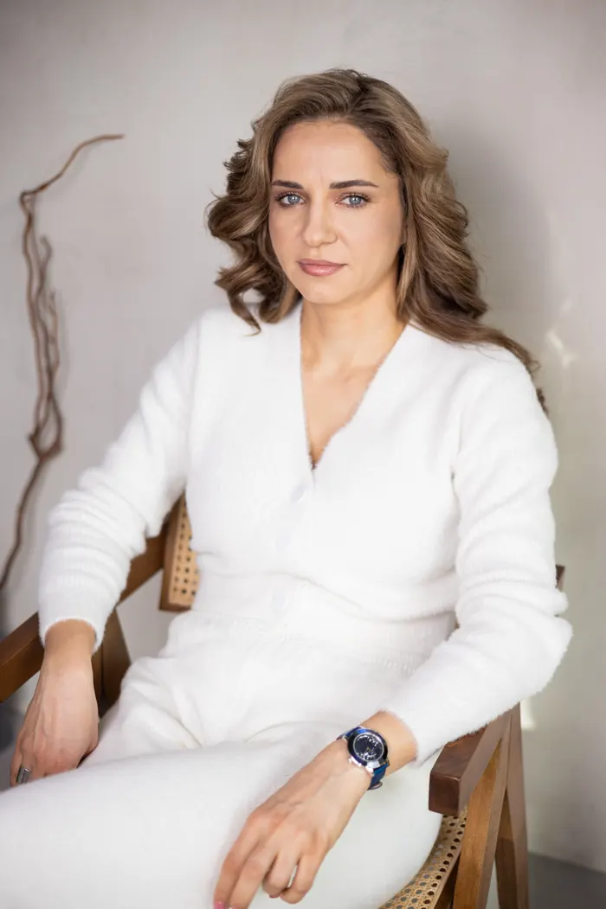
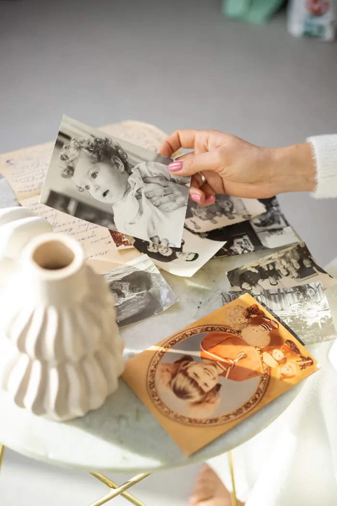
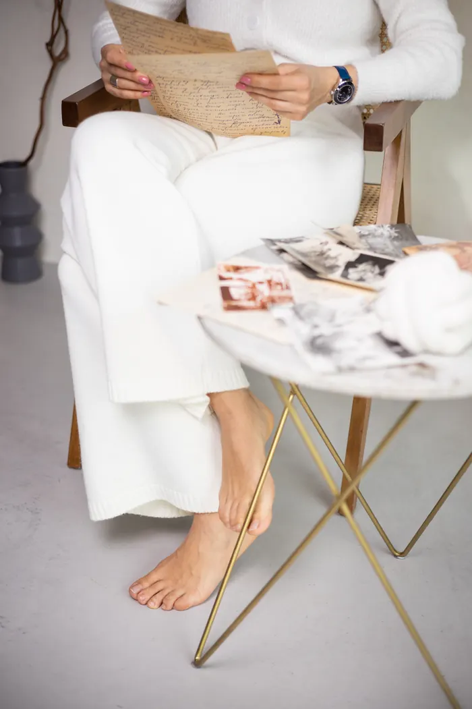
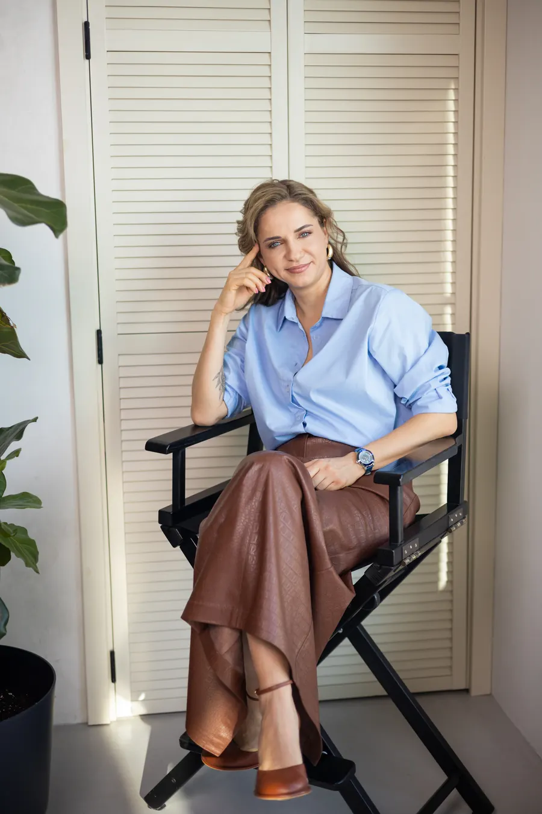
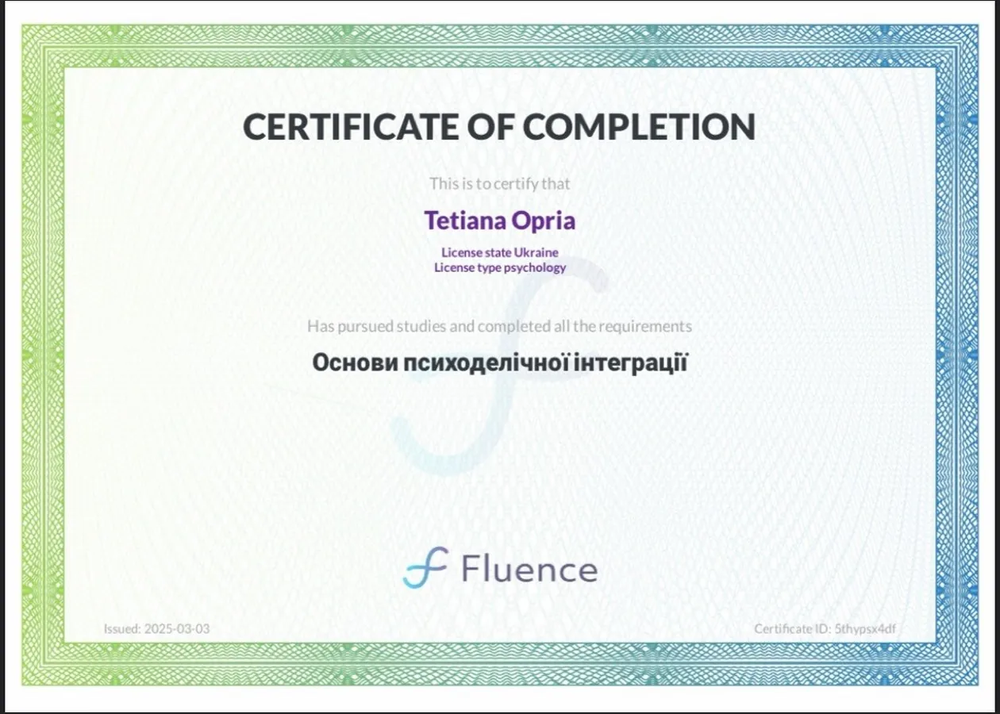
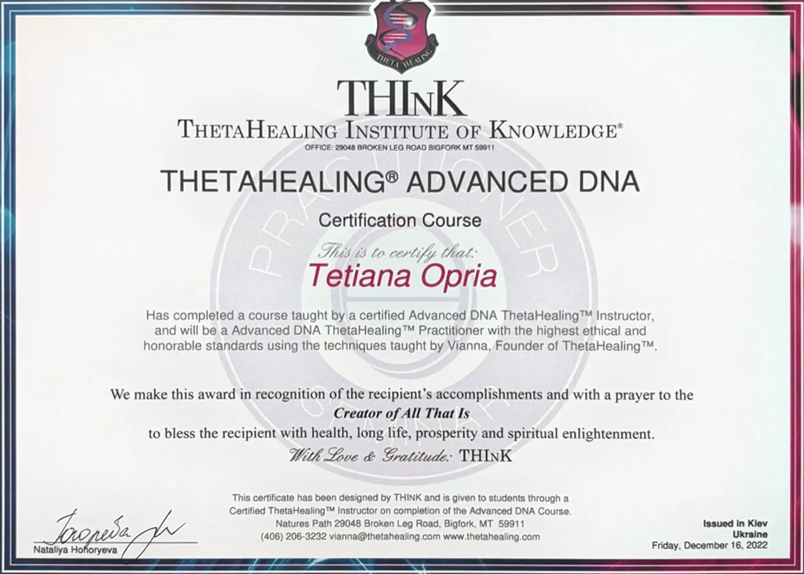
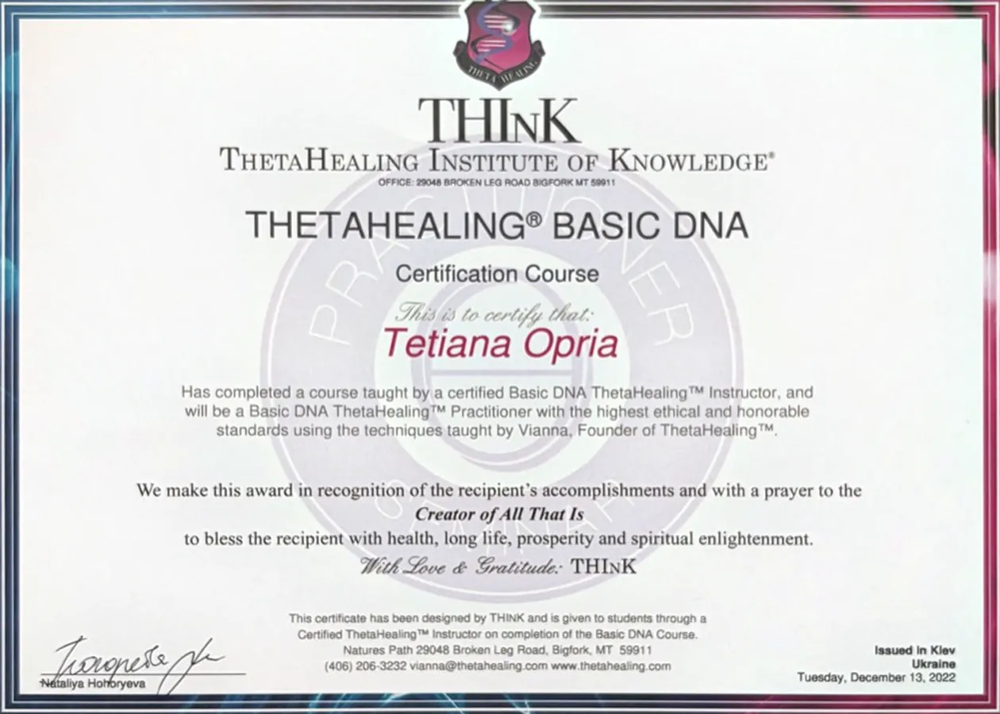
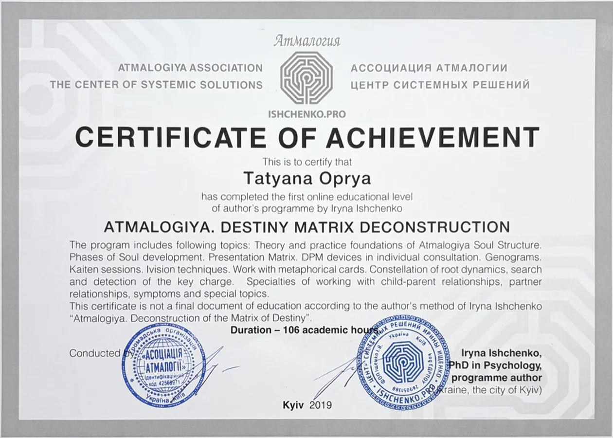

Робоча зустріч · 3 години01
Діагностика бізнесу
- Діагностика цілей
- Діагностика команди
- Діагностика продукту
- Формат
- робоча зустріч офлайн або онлайн
- Тривалість
- 3 години
300 €
Допомагаю власникам побачити приховані ризики й напругу в команді та структурі — і вибудувати процеси, відповідальність і комунікацію, з якими бізнес росте.

Що я роблю
Поєдную аналітичний погляд на бізнес із розумінням людей, які його створюють.
Тетяна Опряпсихолог
Напрями
Чотири формати роботи — від першої консультації до роботи з бізнесом і особистої підтримки.
Первинна консультація: 60 хвилин діагностики. Розбираємо ваш запит і підбираємо формат подальшої роботи.

Аналітика, SWOT-аналіз, діагностика структури управління, процесів і комунікацій. Програма «Бізнес з розумом» для власників і керівників.

Інструмент глибинної роботи з несвідомим: сеанс працює на трьох рівнях — ментальному, чуттєвому й тілесному.

Програма психологічної підтримки для тих, хто чекає своїх рідних.


Про мене
Працюю з власниками та командами: знаходжу, де саме губляться гроші, час і енергія, — у структурі, процесах чи стосунках між людьми. Окремо веду психологічну практику.
Дипломи
Стрічка гортається сама. Наведіть на сертифікат, щоб прочитати про нього, або натисніть, щоб відкрити повністю.

Основи психоделічної інтеграції, FluenceFluence · 2025. Курс освітньої платформи Fluence для фахівців із психології. Сертифікат про завершення навчання.
ThetaHealing® Advanced DNATHInK · 2022. Поглиблений курс ThetaHealing® Institute of Knowledge. Дає кваліфікацію практика Advanced DNA.
ThetaHealing® Basic DNATHInK · 2022. Базовий курс ThetaHealing® Institute of Knowledge. Дає кваліфікацію практика Basic DNA.
Атмалогія. Деконструкція матриці доліAtmalogiya · 2019. Перший рівень авторської програми Ірини Іщенко, 106 академічних годин: генограми, метафоричні карти, робота зі стосунками.Для бізнесу
Три формати програми «Бізнес з розумом». Зустрічі проходять офлайн або онлайн, оплата онлайн.
Відгуки клієнтів
Співпраця з Тетяною стала важливим етапом розвитку команди.
Завдяки глибокій аналітиці та SWOT-аналізу ми виявили приховані організаційні ризики.
Вибудували нові принципи відповідальності та комунікації — і це прямо вплинуло на зменшення конфліктів, дедлайни та залученість працівників.
Тетяна допомогла поглянути на наш бізнес під новим кутом. Ми провели діагностику команди, визначили слабкі місця в мотивації та управлінні графіками.
Завдяки структурованому підходу — з елементами SWOT-аналізу та персональних сесій — вдалося стабілізувати внутрішню атмосферу й повернути майстрам відчуття особистої значущості.
У результаті підвищилася лояльність клієнтів, скоротилася плинність і зросла ініціативність співробітників.
Робота з Тетяною Опря дала нам змогу комплексно налаштувати взаємодію між відділами.
За допомогою психодіагностики, стратегічного аналізу та коригування внутрішніх бізнес-процесів команда почала працювати злагодженіше й продуктивніше.
Ми впровадили регулярні практики зворотного зв'язку, моніторинг емоційного стану співробітників і оптимізували KPI. У результаті підвищилася якість обслуговування і знизилася плинність персоналу.
Як психолог, я шукала спосіб глибше працювати з клієнтськими запитами без жорстких шаблонів.
Після курсу я почала використовувати символічне мислення як інструмент діагностики станів. Це додало глибини моїй роботі і розширило професійне бачення.
Було відчуття, ніби я постійно приймаю рішення в тумані. Логіка ніби є, але ясності не було.
Зараз я чітко бачу, звідки виникає мій стан і як він впливає на вибір. Це дало відчуття внутрішньої опори, якої раніше не було.
Я очікувала технік, але отримала інше — зміну способу мислення. Я почала задавати собі питання, які раніше просто не приходили в голову.
Це вплинуло не тільки на роботу з клієнтами, а й на особисті рішення. Відчуття — ніби мислення стало глибшим шаром.
Для мене це не про езотерику. Це про здатність бачити приховані причинно-наслідкові зв'язки у власних станах.
Після курсу я став точніше приймати фінансові та стратегічні рішення, менше реагуючи емоційно.
Прийшов із скепсисом. Але мені реально допомогли побачити, де я сам себе блокую.
Дуже м'який і адекватний підхід.
Це вже зовсім інший рівень глибини. Робота йде не тільки з ситуаціями, а з внутрішніми сценаріями.
Після сесій реально змінюється спосіб мислення.
До курсу я часто діяла імпульсивно — особливо в роботі. Було відчуття постійного внутрішнього шуму і перевантаження. Я не розуміла, чому приймаю ті чи інші рішення, просто «так виходило».
Після навчання я почала бачити структуру своїх станів. Це не магія і не передбачення — це спосіб розпізнавати внутрішні патерни. Зараз я значно спокійніше приймаю бізнес-рішення і відчуваю контроль над процесом.
Я прийшов із запитом на ясність у складних управлінських рішеннях. Часто було відчуття тиску і розпорошеності.
Курс дав мені інструмент спостереження за своїм внутрішнім станом перед дією. Це кардинально змінило мій підхід до роботи з командою і стратегічного планування.
YouTube
Розмови про жінок, стосунки й підтримку — та програма «8 кроків».
Контакти
Найшвидше відповідаю в Telegram. Розкажіть коротко про ваш запит — і ми домовимося про зустріч.